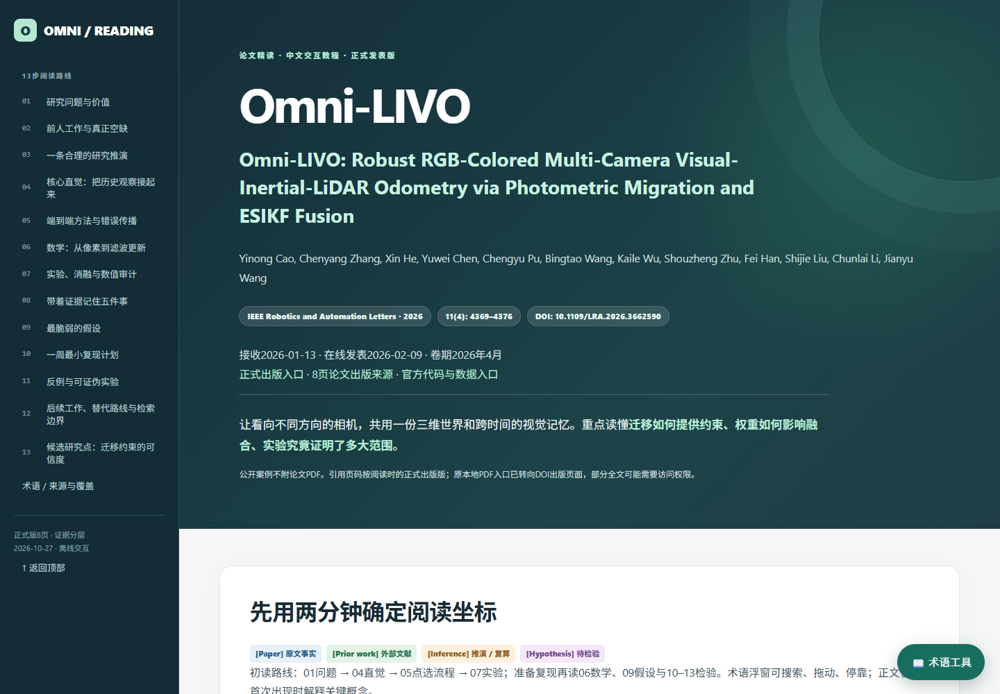

Omni-LIVO
Robust RGB-Colored Multi-Camera Visual-Inertial-LiDAR Odometry via Photometric Migration and ESIKF Fusion
13 research stages27-sequence comparisonExpandable mathematicsMovable glossary
The original run passed 63 desktop report checks. No SLAM algorithm replication is claimed; no paper PDF is redistributed.原始生成轮次63项桌面报告检查通过。不声称完成SLAM算法复现，不分发论文PDF。
Open the interactive report →在线体验完整报告 → · Source and validation案例源码与验证说明